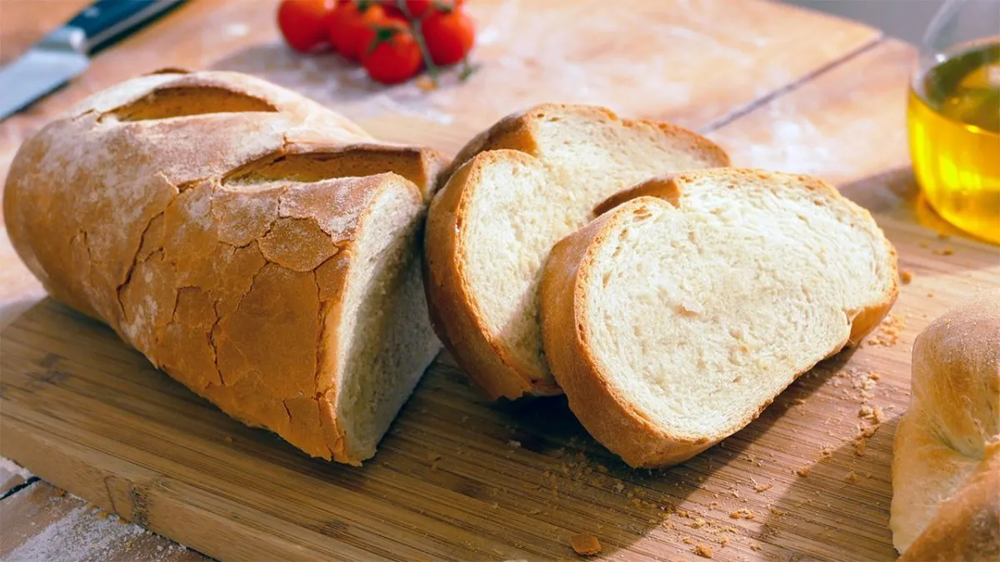

Pan Casero
Suave por dentro y crocante por fuera, el pan casero es ideal para acompañar cualquier comida o disfrutar recién horneado con manteca.
Autor
Lautaro Martínez

Lautaro Martínez es un chef creativo y apasionado por la cocina, conocido por su habilidad para transformar ingredientes simples en experiencias gastronómicas memorables. Su estilo combina técnicas clásicas con innovación, ofreciendo platos que sorprenden tanto por sabor como por presentación.
Ingredientes
Pan Casero
- 500 g de harina común
- 25 g de levadura fresca
- 1 taza de agua tibia
- 1 cucharadita de sal
- 1 cucharadita de azúcar
Receta
- Disolver la levadura en el agua tibia con azúcar y dejar reposar 10 minutos.
- En un bol grande, colocar la harina y la sal.
- Agregar la mezcla de levadura y amasar hasta obtener una masa suave.
- Dejar leudar cubierta hasta que duplique su tamaño.
- Formar panes o bollos y colocar en una bandeja enharinada.
- Dejar reposar 15 minutos más.
- Hornear a 200 °C por 30 minutos o hasta que esté dorado.
- Enfriar sobre una rejilla antes de cortar.
Califica esta receta y deja tu opinión
Selecciona una calificación